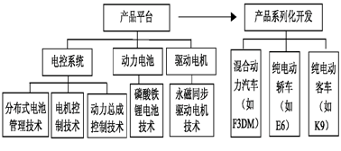

新能源汽车创新
20世纪90年代,比亚迪借助低成本创新,实现从作为MOTOROLA、NOKIA等跨国巨头锂离子电池供应商到电池行业领导者的转变,形成了动力电池技术创新能力和先行者优势。
比亚迪从事传统汽车生产始于2000年前后,并于2002年7月收购北京吉驰汽车模具有限公司,获得了供轿车模具制造技术。在2003年1月,通过收购西安秦川汽车获得汽车行业“牌照”及目录资源,并具备了整车制造技术。在2003年4月,成立上海比亚迪汽车研发中心,并依托上海汽车工业园建立汽车研发体系与整车检测中心[23]。比亚迪在汽车整车开发与制造创新方面的大范围垂直整合使其迅速推出了经典的低能耗汽车F3。
尽管F3不是新能源汽车,但是比亚迪以这款低耗能畅销车型作为架构原型和渐进性创新载体,有效集成动力电池技术与汽车制造技术优势,于2006年6月成功研制出第一款纯电动汽车F3e,开启了比亚迪新能源汽车发展的历程。
值得注意的是,国家在“十五”规划中提出“863”电动汽车重大专项,确立“三纵三横”的研发格局,为比亚迪F3e的出现提供了有利的创新政策以及技术支持环境。
2007年11月,国家发改委发布《新能源汽车生产企业及产品准入管理规则》,规定新能源汽车企业准入必须达到至少掌握车载能源系统、驱动系统及控制系统三者之一。为此,比亚迪于2009年在广东惠州建成磷酸铁锂电池生产基地,并在2010年10月收购西藏日喀则扎布耶锂业22%股权,强化了比亚迪锂电池的核心技术优势和顶级供应商地位。为了提升电机驱动技术优势,比亚迪于2008年收购宁波中纬,成立宁波比亚迪半导体有限公司,并于2010年收购日本荻原公司旗下汽车模具工厂。这些举措促进了比亚迪新能源汽车产品平台的快速构建并持续升级。
打造新能源汽车产品平台是比亚迪实现由F3e向系列化开发的关键。2009年1月国务院通过《汽车产业振兴规划》,首次提出新能源汽车战略,2010年3月比亚迪便推出了全球第一款双模电动车F3DM。在2010年,比亚迪电动大巴K9正式下线,并与长沙市政府签署1000辆K9购销意向协议,标志着比亚迪进入公共车辆运输领域;2011年,深圳投入试运营50辆比亚迪纯电动轿车E6,开启公共交通电动化的革新旅程。总之,比亚迪通过关键部件模块技术优势构建新能源汽车产品平台,并积极开展新能源汽车的系列化开发(如图1所示)

总的来说,对应于新能源汽车创新历程的三个阶段,新能源汽车创新生态系统演进遵循了“小生境→开放式平台→全面拓展”的路径。
(1)基于渐进性小生境的启动路径。渐进性小生境是指逐步形成的最小的且相对完备的生境,这也是新能源汽车创新生态系统演进的雏形。具体地,新能源汽车创新生态系统的构建可以通过对传统汽车以及新能源电池技术模块的积累、购买、改进并转移嫁接为新能源汽车创新体系。新能源汽车渐进性小生境的构建也遵循了一般的创新生态系统开启过程,即选择最小风险点切入开展创新,并且构建最小的且相对完备的创新生态系统[1]。当然,新能源汽车创新生态系统构建有其特殊性,一方面,新能源汽车的技术复杂度非常高,既便是小生境时期也需要考虑到多方面的部件模块的技术成熟度;另一方面尽管新能源汽车属于新兴产业领域,但其产品架构相对明确,可以充分地利用传统汽车技术以及电池技术的有效转移和嫁接来构建新能源汽车创新生态系统的小生境。事实上,比亚迪收购吉驰汽车模具、秦川汽车,在上海成立研发中心,尽管更直接服务于比亚迪传统汽车研发与制造工艺(如推出F3),但客观上为向新能源汽车进行技术转移与嫁接奠定了基础,并与原有电池技术一并渐进性改进的基础上完成了新能源汽车小生境的构建,快速推出了F3e。
新能源汽车领域的渐进性小生境有其优越性,可以快速整合企业内外部成熟的汽车及电池技术,并通过技术转移和嫁接来快速完成新能源汽车产品创新。渐进性小生境是降低新兴产业复杂产品创新风险的最佳演进起点选择,也是我国在传统汽车创新能力长期不足背景下开启创新机会窗口的关键[25],并可为向更高层次创新生态系统演进提供了必要条件(如技术能力积累、创新方向逐步确定以及技术、市场、政策等创新生态因子逐步成熟)。当然,不可否认,渐进性小生境有其固有的系统“脆弱性”,该系统的相对简单化与新能源汽车技术的复杂度高相矛盾,其创新产品的单一性更是难以应对技术、市场、政策环境的不确定性。因此,渐进性小生境是我国新能源汽车创新生态系统演进过程中不可跨越的一段路径,同时也需要尽快主动向高层次创新生态系统演进获得“生存”,而非以往学者认为的形成最小完备系统后可伺机演进[26]。比亚迪快速推出F3e确实得益于渐进性小生境的构建与逐步趋于完善,但是由于充电桩等基础设施的缺乏以及用户对新能源汽车的认可度偏低等原因,F3e商业化过程是不成功的,这也印证了新能源汽车渐进性小生境演进路径的优缺点。
(2)基于开放式产品平台的接续路径。为了推进新能源汽车创新生态系统向高级阶段演进,遵循最小可行足迹演进[26],对渐进性小生境进行接续。为此,突出了新能源汽车有别于传统汽车的行业本质,即“新能源”的独特本质,也就是电池、电动、电控等关键部件技术,这就是新能源汽车的核心产品平台,更是新能源汽车创新生态系统特定演进阶段的“内核”。我国新能源汽车创新生态系统升级演进过程中仍然借鉴了小生境的快速整合内外部创新资源的“惯例”,体现了开放式创新思想[27]。基于开放式产品平台的演进路径就是在快速整合外部创新资源和技术优势的基础上,围绕电池、电动、电控等关键部件技术进行重点突破与持续升级,并且以这些核心模块为内核(核心产品平台)推进新能源汽车创新生态系统演进的战略导向及方法手段。这一演进路径致力于支撑新能源汽车产品的系列化开发,更好地满足市场的多样性需求,提升创新成功率和促进创新价值实现。比亚迪为了摆脱小生境阶段的生存危机,运用开放式的创新思维与发展逻辑,收购西藏日喀则扎布耶锂业股权以及馆林工厂、三湘客车等,夯实锂电池创新优势和突破电机、电控等关键核心技术瓶颈,较早地构筑了国内最先进的新能源汽车产品平台,并以此为基础成功推出了F3DM、E6、K9等产品系列。
相对于渐进性小生境,开放式产品平台对外部创新资源的整合力度增强,加大对新能源汽车核心模块技术创新,有效地吸纳更多合作创新者,一方面通过产品多样性开发提升了市场适应性,使得整个创新生态系统的稳定性增强、独特性凸显,另一方面也有助于提升车企的领导者地位[28]。然而此演进阶段的新能源汽车创新生态系统蕴含着众多风险,其深层次原因是新能源汽车技术复杂度高,各类部件技术成熟度难以协调一致。尽管新能源汽车制造商不断拓展新能源汽车创新生态系统的时空边界,使得创新生态系统尽可能沿着“最小可行足迹”演进,但是受制于技术突破和集成能力的有限性,使得创新生态系统的实际边界小于理想边界。此外又伴随着市场需求增长缓慢背景下的“盲目扩张”风险,这也是我国新能源汽车创新生态系统演进路径存在的特殊性。事实上,比亚迪新能源汽车产品平台的构建以及F3DM、E6、K9等产品的系列化开发,一方面提升了比亚迪的自主创新能力,另一方面也暴露出了创新资源浪费、创新成本提高、商业化成功率低等问题。
(3)基于全面拓展的转化路径。该路径是基于产品平台转向以用户需求为主导,最大限度地集成各类用户主体,重点对市场范围、应用领域以及使用配套设施等进行持续最优边界拓展的战略导向。据此,由强调产品平台主导下的各类创新主体协同转化为创新主体与需求主体的协同升级、技术成熟度和市场成熟度的协调一致,因此,基于全面拓展的转化路径致力于推动新能源创新生态系统走向成熟,强调创新与需求对接或需求导向下的创新,这也是进一步凸显创新生态系统有别于一般创新体系的关键特征[29]。新能源汽车产业是能源、环保、制造、运输等交叉融合的战略性新兴产业,不仅创新主体多样性,其需求及配套主体也比较复杂,如最终消费者、政府部门、公共交通部门等均会成为直接或间接的用户主体,这不仅仅要理顺各参与主体的剩余价值,而且还要有效掌控由其营造的消费理念,以实现创新生态系统与创新生态环境因子的有效匹配。事实上,在政府及公共服务部门大力支持新能源汽车以及消费者绿色出行的背景下,比亚迪承接其新能源汽车系列化开发优势,以获得欧盟WVTA整车认证为标志,致力于国际市场的“圈地”和国内市场的“深耕”,推进“7+4”全市场战略布局,提供整套电动车充电解决方案,实现了新能源创新生态系统沿着基于全面拓展的转化路径走向成熟。
――中国软科学期刊
2 氢燃料补给基础设施
开发氢燃料补给设施是一个巨大工程。目前,为汽车研究提供支持的汽车用氢燃料补给站已基本建立。在补给站内储存氢燃料仍然是一个难题。
截止 2008年 8月, 在美国和加拿大约有 112个氢燃料补给站, 其中约有 24个位于加州。美国能源部(DOE)预计建造氢燃料补给设施的费用在1 000 ～ 6 000亿美元之间,但通用汽车公司与壳牌加氢公司在 2007年 12月发布的一份报告中估计 :建造 1.2万个氢燃料补给站需要 100 ～ 150亿美元, 或大约是建造阿拉斯加输油管所耗费用的1/2。这些补给站能为 100万辆 FCV补给燃料, 并为 70%的美国人口在 2英里之内放置一个氢燃料补给站。
在日本 ,至少有 12个氢燃料补给站 ,其中有 5个在东京城区。岩谷产业株式会社和关西电力公司已经开发出一种移动液氢补给站, 此补给站安装在一个半拖车上以补给小型氢燃料汽车。 它用来将天然气转化为氢气, 同时也提供家庭供热和供电。
与美国相似, 德国政府正鼓励开发 “氢气公路”,目前在德国至少有 14家氢气加注站 , 其中 6 家为私人加注站。在法国只有两家私人加注站 , 在欧洲其他国家数量更少。
2008年 4 月中旬 , 英国第一家氢燃料站在伯明翰大学开业 ,该站构成由总部设在考文垂的 Mi-crocab有限公司设计和建造的 5辆试验性的燃料电池车的一部分。总部设在美国宾夕法尼亚州的空气化工产品公司(氢气的生产商和供应商 )已专门设计了 100 个氢燃料站。燃料站是集氢气压缩、储存和分配为一体的系统 ,最佳状况时可每天给大约 6辆车加注燃料。燃料站所需要的现场公用设施极少, 这对氢燃料站的启动非常有利。2008年 9月下旬, 第二家空气化工产品公司的氢燃料加注站在英国的拉夫堡大学正式开业。也有在伦敦建造
3 家氢燃料加注站的计划 ;伦敦交通委员会正计划在 2009年给他们车队增加 70辆氢动力车辆。英国政府的目标是到 2010年在适当位置有 12家可使用的氢燃料加注站。
3 氢燃料的生产
氢的生产是一项重要的全球性业务。根据2007年 12月壳牌氢能公司―通用汽车公司的报告, 目前每年的氢产量约为 4 000万 t, 足以给 1.3 亿辆燃料电池车提供燃料。其中 1 /4的氢用在石油精炼过程中。日本宣称已有能力为 300万辆燃料电池车生产足够的氢。法国液化空气公司报告称:在法国 ,氢燃料的需求量以每年 10% ～ 15%的速度增长 ,预计在 2008年生产 59万 t氢。
然而 ,目前绝大多数氢的生产是采用蒸气甲烷重整法 , 这意味着该方法产生 CO2。其他生产方法包括煤 (产生 CO2 )或生物质气化、高温水裂解和一些新兴技术, 如利用阳光从水中分出氢的光解方法。用化石燃料发电 ,再用电使水分解的方法也产生 CO2,水解的效率只有大约 70%,氢气压缩的效率大约为 90%,在电动机输出阶段 ,燃料电池将燃料能量转化为直流电的效率最大为65%,因此 ,电能输出到电动机输出的效率大约为41%。相比之下, 直接向纯电动汽车的锂离子电池充电时 , AC-DC蓄电池的充电效率大约为89%,电池效率为 94%, DC-AC转化效率为95%,因此 ,最终效率为 79%。由于效率和成本原因,美国国家研究理事会的一个专家小组称 PHEV 是更有前途的替代车。
全球最大氢生产商空气化工产品公司已完成85个氢加注站的项目 , 为 6 万辆 FCV加注燃料,如果加注设施建成 ,他们有信心为 10万辆燃料电池车提供足够的氢燃料。尽管如此 , 公司认为在加注站现场电解氢仍是不现实的 , 因为需要巨大的储存量及如何处理供应与需求的问题 , 特别是
在交通高峰期。然而, 随着其它氢生产公司已拥有用于天然气分销网络的载货汽车和运输管道 , 空气化工产品公司认为从中央设施生产氢燃料再进行运输更可行。
壳牌公司也认为现场电解装置的潜力有限。公司认为使用天然气的蒸气甲烷重整法是最好的方法
,因为它能以比电解法低的成本生产大容量的氢气。橡树岭国家实验室评估包括运输和末端费用在内的中央工厂生产成本在每千克
2.50 ～3.25美元 ,该成本与每加仑汽油的成本相当 ,而在加注站的小厂生产成本接近每千克 5美元。
宾夕法尼亚州立大学已研发出一种新的氢气生产工艺, 利用自然发生的细菌和弱电解方法分解纤维塑料、葡萄糖、醋酸酯或其他挥发性酸等有机废料。唯一的排放物是水, 反应器工作用水可以来自食品加工厂和其它废水处理厂。该工艺过程只需要水解法所需电能的 10%左右。
丰田中央研发实验室宣布发现利用乙醇生产氢更有效。该新方法是:使水和乙醇的混合物通过装在一铝盒子内并含有铑和金刚砂作为催化剂的石英管中。使用微波对盒子内部加热
, 该热易被金刚砂吸收。试验表明 1 mL体积分数比为 50 50的乙醇 -水混合物可产生 0.92 L氢气 , 能量转化效率为 80%左右, 是传统技术的 2倍。
本田公司已研发出适合家庭使用的氢发电装置。该装置使用家庭用的天然气生产氢气
, 同时为普通家庭提供热能和电能。日本宣称该技术能减少排放和消费者的能源成本。相比美国普通家庭的电网供电和汽油轿车, 使用家庭能源站帮助供热和供电及给轿车加注燃料的家庭估计可减少30%的 CO2排放量 ,能源成本估计降低 50%。
――上海汽车期刊